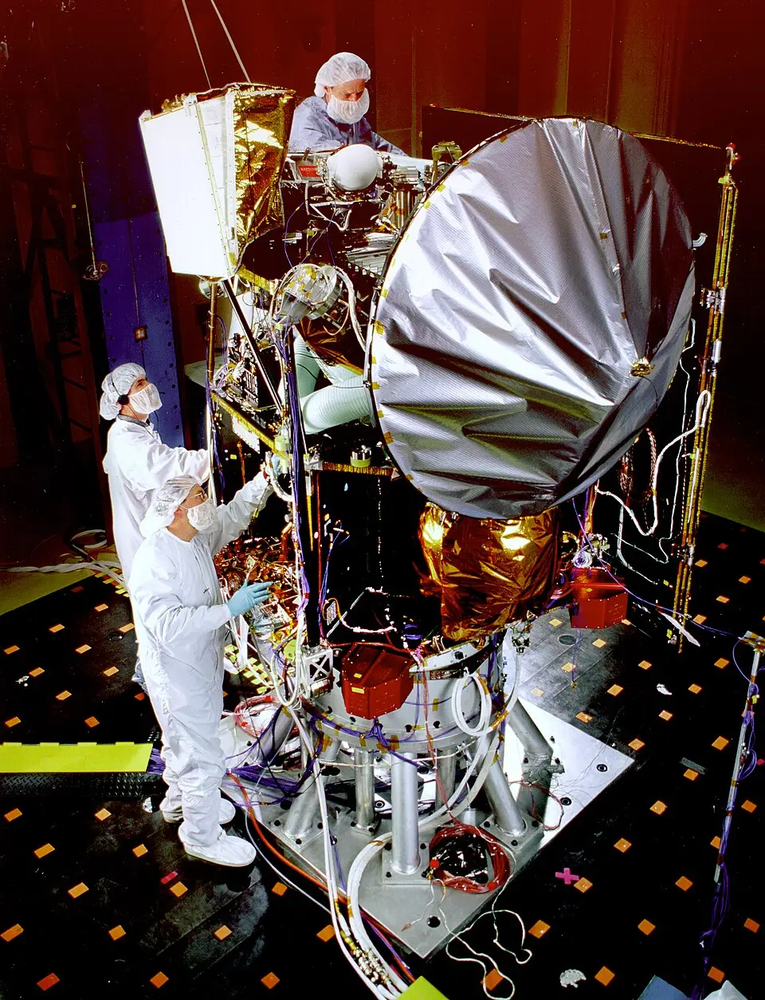
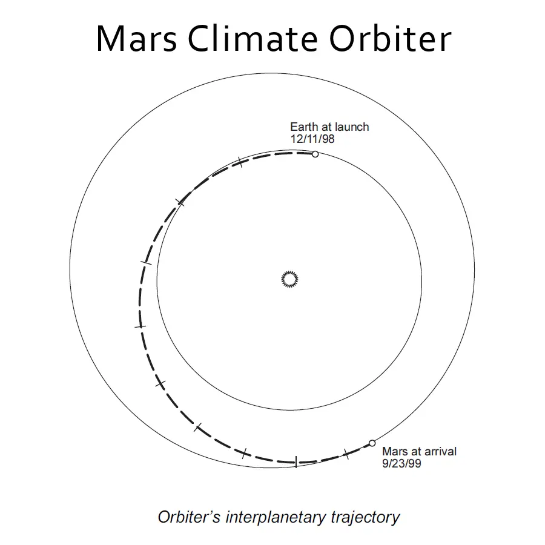
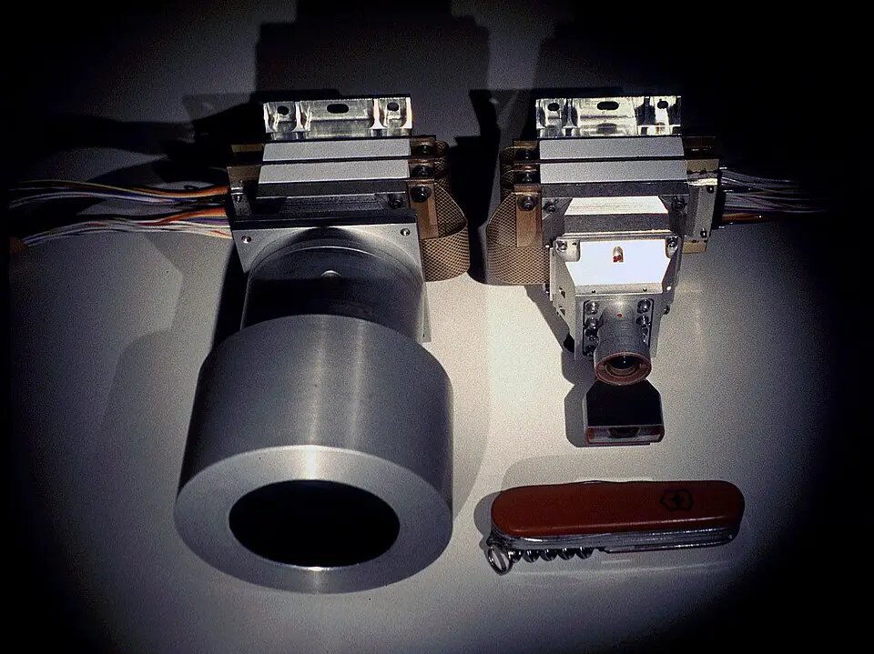

Tàu vũ trụ mất tích vì nhầm đơn vị đo
Ngày 23/9/1999, tàu Mars Climate Orbiter khuất sau sao Hỏa sớm 49 giây và không bao giờ lên tiếng lại. Một phần mềm tính bằng pound, phần mềm kia hiểu là newton.

Lúc 09:00:46 giờ UTC ngày 23 tháng 9 năm 1999, tàu Mars Climate Orbiter của NASA khởi động động cơ chính để hãm tốc và đi vào quỹ đạo sao Hỏa. Bốn phút sau, tàu bay ra phía sau hành tinh và mất sóng, đúng như kế hoạch. Chỉ có một điều lạ: nó mất sóng sớm hơn dự tính 49 giây. Đội điều khiển ở Phòng thí nghiệm Sức đẩy Phản lực (JPL) chờ tín hiệu quay lại. Tín hiệu không bao giờ quay lại.
Một con tàu nhỏ, rẻ, nhiều việc
Mars Climate Orbiter thuộc chương trình Mars Surveyor '98, ra đời sau khi NASA mất tàu Mars Observer và quyết định chuyển sang những tàu nhỏ, rẻ, phóng thường xuyên. Tàu nặng 638 kg kể cả nhiên liệu, thân cao khoảng 2,1 m, chạy bằng ba tấm pin mặt trời. Nhiệm vụ của nó là theo dõi thời tiết, bụi và hơi nước trên sao Hỏa, đồng thời làm trạm chuyển tiếp liên lạc cho tàu đổ bộ Mars Polar Lander sẽ đáp xuống gần cực nam vào ngày 3/12/1999.
Tàu được phóng ngày 11/12/1998 từ mũi Canaveral, Florida, trên tên lửa Delta II. Hành trình dài khoảng 9,5 tháng và 669 triệu km.
Dấu hiệu đã có từ trước


Ngày 15/9/1999, tàu thực hiện lần chỉnh hướng thứ tư, gọi là TCM-4, để đi vào sao Hỏa ở độ cao khoảng 226 km. Trong tuần sau đó, đội dẫn đường thấy tàu có vẻ đang đi thấp hơn, chỉ khoảng 150 đến 170 km. Hai mươi bốn giờ trước giờ vào quỹ đạo, tính toán cho thấy độ cao chỉ còn 110 km. Giới hạn an toàn được ước tính là 80 km.
Theo hồ sơ điều tra, ít nhất hai người dẫn đường đã nhận ra sai lệch giữa vị trí tính toán và vị trí đo được từ trước. Lo ngại của họ bị gạt đi vì họ không điền đúng mẫu đơn quy định. Một cuộc họp từng bàn việc thực hiện lần chỉnh hướng thứ năm, TCM-5, đã có trong lịch trình. Những người dự họp nhớ là đã đồng ý làm, nhưng cuối cùng không ai làm.
Tính toán sau sự cố cho thấy tàu đã lao vào sao Hỏa ở độ cao chỉ khoảng 57 km.
Bằng chứng nói gì


Ngày 10/11/1999, Hội đồng điều tra sự cố công bố báo cáo giai đoạn I. Nguyên nhân chính nằm ở mặt đất, không phải trên tàu. Một phần mềm do hãng Lockheed Martin cung cấp tính xung lực của các lần phụt động cơ nhỏ theo đơn vị Mỹ, pound-lực nhân giây. Điều này trái với bản đặc tả giao diện, vốn yêu cầu dùng hệ mét. Phần mềm tính quỹ đạo của NASA nhận những con số đó và hiểu là newton nhân giây. Mỗi con số vì thế lệch đi 4,45 lần.
Sai số nhỏ ở mỗi lần phụt cộng dồn suốt nhiều tháng bay. Tính toán sau sự cố cho thấy tàu đã lao vào sao Hỏa ở độ cao chỉ khoảng 57 km. Ở độ cao đó, tàu có lẽ đã bị bầu khí quyển phá hủy, hoặc nảy ra khỏi khí quyển và trôi vào quỹ đạo quanh Mặt Trời. Không ai biết chắc là trường hợp nào.
NASA không đổ hết lỗi cho Lockheed Martin. Nhiều quan chức NASA nói chính cơ quan này có lỗi vì đã không kiểm tra và thử nghiệm đủ để bắt được sai lệch.
Hai con tàu trong hai tháng rưỡi
Con số 327,6 triệu đô la thường được gắn với Mars Climate Orbiter thật ra là chi phí của cả dự án, gồm tàu quỹ đạo và tàu đổ bộ. Theo NASA, trong đó có 193,1 triệu cho chế tạo, 91,7 triệu cho phóng và 42,8 triệu cho vận hành.
Hai tháng rưỡi sau, ngày 3/12/1999, chính tàu đổ bộ Mars Polar Lander cũng mất liên lạc khi hạ cánh. Nguyên nhân có lẽ nhất là động cơ tắt quá sớm, khiến tàu rơi xuống mặt đất ở tốc độ cao. Thomas Young, chủ tịch nhóm đánh giá độc lập chương trình sao Hỏa, kết luận chương trình Mars Surveyor '98 bị thiếu kinh phí ít nhất 30%.
Dư âm đến hôm nay
Phần lớn mục tiêu khoa học của Mars Climate Orbiter về sau được tàu Mars Reconnaissance Orbiter hoàn thành; camera màu MARCI của nó được làm lại và mang lên tàu mới. Còn vụ nhầm đơn vị trở thành ví dụ quen thuộc trong các danh sách lỗi phần mềm nổi tiếng và trong những cuộc tranh luận về việc Mỹ chuyển sang hệ mét.
Lỗi đơn vị là nguyên nhân trực tiếp đã được xác định; nhưng theo chính các nhà điều tra, thứ để lỗi ấy lọt qua là cách quản lý và kiểm tra, không phải một con số.